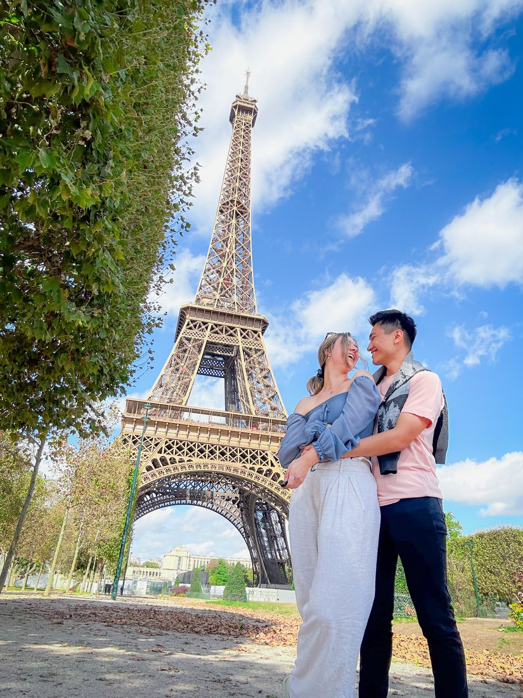
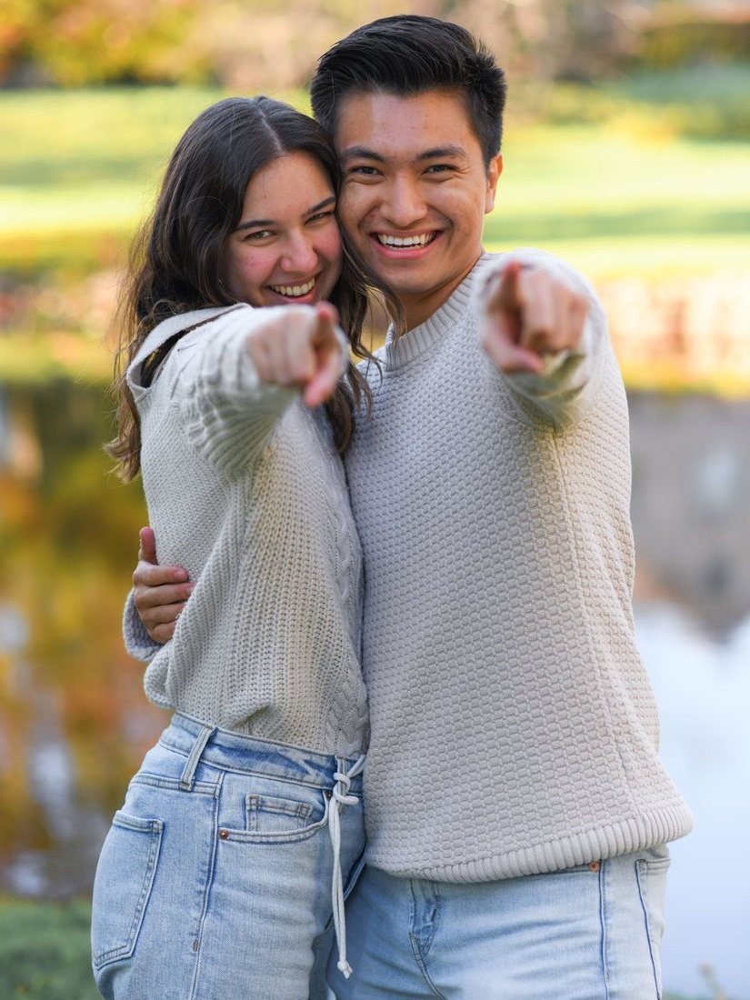
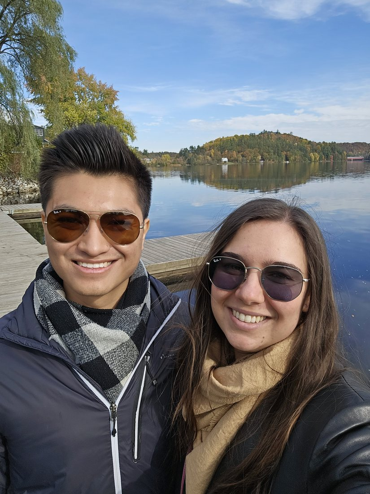

Downtown · Historic
The Grand Hotel
A restored 1872 hotel on the main street with 16 rooms.
7 Bridge Street, Carleton Place
613-492-1566
Together with their families
Monday, August 9, 2027 · Stonefields Estate · Carleton Place, Ontario
You're invited
Five years after a first game of mini-putt, and more grocery runs together than we can count, we're getting married.
We're keeping it small: about 75 who have supported us and hold a meaningful place in our hearts. If you're reading this, you're one of them.
Have a look around, read how it all started, and please send us your RSVP by December 1, 2026.
Our Story
It started with a match online and a game of mini-putt on a warm summer evening. One outing led to another, and before long, we were seeing each other every day.
2022
We matched online in May 2022 and found out that we lived only a few streets apart. In a neighbourhood where both of our families walked for years, little did we know that the “one” had been just down the road that whole time.

2023
2023 rolled around quickly and trust found its way into the relationship with ease. We took our first big trip together to the most romantic city in the world: Paris, where we explored the streets, and what we meant to one another.

2024
By 2024, we spent our time with friends and family, made new connections, and explored new opportunities in life.

2025
In April 2025, on a stone terrace above Lake Como in Italy, a new chapter of our lives officially began when we got engaged. That October, we moved in together.

2026
After nearly a year of living together and learning the ins and outs of homeownership, we officially started planning our wedding!

2027
We toured ten venues across Ottawa and the towns around it. Once we saw Stonefields, we knew it was the one. The modern vintage feel, the gorgeous bright and airy chapel – it reflected exactly who we are. On August 9, 2027, we'll say our vows there, and we'd love for you to be with us.
The Venue

Stonefields is a 120-acre heritage farm just outside Carleton Place, with an original stone farmhouse, old log barns and long views over the fields. We'll have the whole property to ourselves for the day.
We'll say our vows in the Ceremony House, a bright white chapel with crystal chandeliers. It's indoors, so the weather can do whatever it likes.

4:00 pm
Where we'll say our vows, under the chandeliers.
4:30 pm
Cocktail hour with canapés and the outdoor bar.
6:30 pm
Dinner, speeches and dancing until 1 am.
Make your way to the Ceremony House and find a seat.
In the Ceremony House, rain or shine.

Drinks and canapés on the verandah and patio until 6:30.

Make your way into the Loft and settle in at your table.
Our MC opens the evening and the two of us make our entrance.
Dinner, speeches and dancing in the Loft, the estate's main barn.

The Loft stays open until 1 am for anyone who wants to keep dancing, but there's no need to stay to the end. Head home whenever you're ready, and plan your ride before you go.

What to wear
Think garden party dressed up and summer colours. Cocktail hour is out on the verandah and patio, and you'll walk between buildings on garden paths, so block heels or flats will save your evening.
Getting around
Stonefields is spread over a small country campus. Park in the guest lot (9) and follow the path to the Ceremony House (2) for the ceremony.
Cocktails are at the bar (5) and on the verandah and patio (6). Dinner and dancing are in the Loft (1).
Travel & Stay
Carleton Place is the closest town, a few minutes from the estate. If you're coming from out of town, these are the nearest places to stay.
Downtown · Historic
A restored 1872 hotel on the main street with 16 rooms.
7 Bridge Street, Carleton Place
613-492-1566

Easy parking · Pool
Free breakfast and an indoor pool.
355 McNeely Avenue, Carleton Place
613-216-0079

On the river · Kitchens
Suites in an old mill on McArthur Island, good for families or a group of friends.
150 Mill Street, Carleton Place
613-451-2644
Getting home
The estate is in the country, and taxis out there take a while to arrive. Plan a designated driver or book your ride home ahead of time.
Gallery
Questions & Answers
We fell for Stonefields, and a Monday gave us the date we wanted. We know it means a day off work for most of you, so we're telling you now. Thank you for making the time.
Some of our family and friends are flying in from overseas, and they need time for flights, visas and time off. Knowing who is coming by December 1 gives everyone time to plan. If something changes later, just let us know.
We're inviting everyone ourselves, by email or a message on social media. If our message to you included a guest, add their name on the RSVP form. We're keeping the list close to 75, so we can't add extra guests beyond that.
A three-course plated dinner, with a choice of two meat dishes or a vegetarian main. We'll choose the menu at our tasting in April and email everyone the options after that.
The ceremony is indoors in the Ceremony House and dinner is in the Loft, so the weather won't change our plans.
Yes. There's a guest lot on the property, marked 9 on the estate map at the bottom of The Day page.
Having you there is plenty.
Text, call or email either of us. We're happy to help.
RSVP
Please reply by December 1, 2026.
Thank
you
Plans change. To update your reply later, send this form again using the same name and we'll replace your old answer.